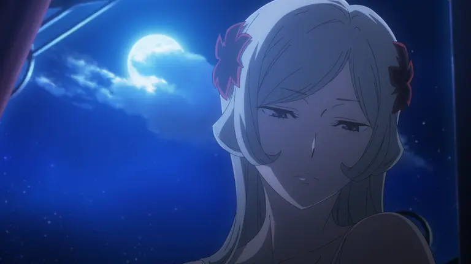

ソフトバンククリエイティブ GA文庫
あらすじ
主人公のベル・クラネルは、英雄譚のような異性との運命の出会いに憧れてオラリオにやって来て、ヘスティアのファミリアに入団した駆け出しの冒険者であり、物語では様々な出会いと冒険を通じたベルの成長、そして出会いの結実やファミリアの絆が物語で展開される[25]。素朴で純粋な動機でダンジョンに挑むベルの行動が次々とヒロインを救うことに繋がり、無意識的にヒロインたちから想いを寄せられてゆくストーリ展開や、憧れを目指して努力や友情によりベルが強くなってゆく昔ながらの少年漫画のような「熱血」な展開が本作品の特徴となっている。
ベル・クラネルは、祖父の教えから冒険者となり、オラリオのダンジョンで日々修行を重ねています。
ある日、ダンジョン内で強力なミノタウロスに襲われ、絶体絶命の危機に陥りますが、ロキ・ファミリアの剣士アイズ・ヴァレンシュタインに救われます。
彼女に一目惚れしたベルは、彼女にふさわしい冒険者になることを決意し、修行に励みます
その後、ベルはサポーターのリリルカ・アーデや鍛冶師のヴェルフ・クロッゾと出会い、仲間として共に冒険を続けます。
リリルカは過去のトラウマから人間不信に陥っていましたが、ベルの優しさに触れ、心を開いていきます。 ヴェルフは魔剣鍛冶師の家系に生まれながらも、魔剣を嫌い、自身の信念を持つ職人です。
物語のクライマックスでは、ベルたちはダンジョンの中層で遭難し、18階層の安全地帯を目指します。
途中、ヘスティアやリュー・リオンたちの救援を受けますが、ダンジョンが生み出した強力なモンスター「漆黒のゴライアス」と対峙することになります。 ベルは仲間たちと協力し、激闘の末にゴライアスを討伐します。

ベルたちは、ダンジョンでの冒険を続ける中、オラリオ内での名声を高めていきます。
しかし、ある日、アポロン・ファミリアの団長ヒュアキントスとの乱闘騒ぎをきっかけに、アポロンから「戦争遊戯（ウォーゲーム）」を仕掛けられます。
戦争遊戯は、ファミリア同士の決闘で、敗者は勝者に従わなければならないという厳しいルールです。
ヘスティア・ファミリアは、少人数でありながらも、リリルカ、ヴェルフ、命、そしてリュー・リオンの協力を得て、戦争遊戯に挑みます。
ベルは、アイズ・ヴァレンシュタインとの特訓を経て、戦闘力を高め、仲間たちと共にアポロン・ファミリアの本拠地を攻略し、見事勝利を収めます。
この勝利により、ヘスティア・ファミリアはアポロン・ファミリアの資産を手に入れ、新たな本拠地「竈火の館」を得ます。
その後、ベルたちは歓楽街で狐人の少女春姫と出会います。 彼女はイシュタル・ファミリアに囚われ、強制的に娼婦として働かされていました。
ベルは彼女を救うため、仲間たちと共にイシュタル・ファミリアと対立します。
ベルはダンジョン内で、言葉を話し感情を持つ幼い竜女の異端児ウィーネと出会います。
彼女を保護することを決意したベルとヘスティア・ファミリアは、ウィーネを巡る冒険者たちの反応や、異端児を狩る者たちとの対立に直面します。
一方、異端児たちは地上での生活を望みますが、人間との共存は容易ではありません。 ベルたちは異端児を守るため、ウラノスやフェルズと協力し、異端児たちをダンジョンへ帰還させる作戦を立てます。
しかし、ロキ・ファミリアやヘルメス・ファミリアなど、他のファミリアとの衝突が避けられない状況に陥ります。
最終的に、ベルは異端児のリーダーであるリドや、かつて戦ったミノタウロスの生まれ変わりであるアステリオスと対峙し、彼らとの戦いを通じて成長し、異端児たちのダンジョンへの帰還を成功させます。
ダンジョンの深層部での過酷な冒険と、ベルたちの成長、そして仲間たちとの絆の深化です。 特に、ベルとリューの関係性が深く描かれ、二人の協力や信頼が試される場面が多く登場します。
深層での戦闘シーンは迫力満点で、視聴者を引き込む演出が施されています。 さらに、ヘスティア・ファミリアの仲間たちがそれぞれの役割を果たし、チームとしての成長も感じられるシーズンとなっています。
深層での未知の試練や、仲間たちとの絆が試される展開が、物語に深みと緊張感を与えています。
間違っているだろうか 詳しく見る 